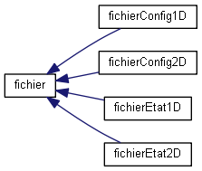
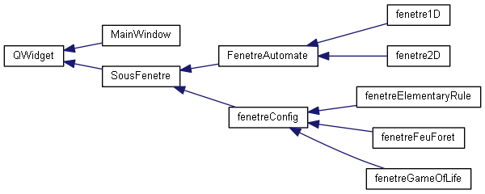
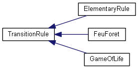
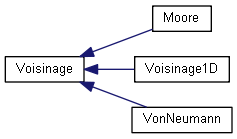

CellularAutomata
Documentation de notre projet de LO21 portant sur les automates cellulaires à 1 et 2 dimensions
CARVALHO Philippe, GUYOT Claire, NOIZET Maxime
Hiérarchie des classes
Aller à la hiérarchie des classes en mode texte




Généré par
1.8.14

 1.8.14
1.8.14